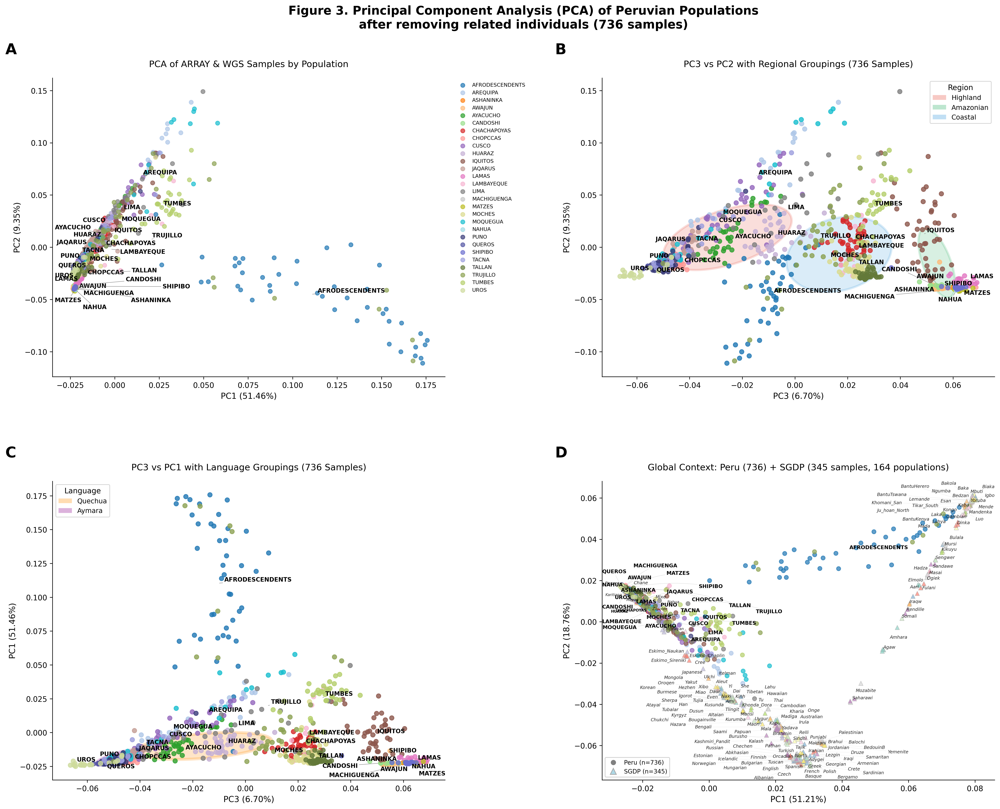
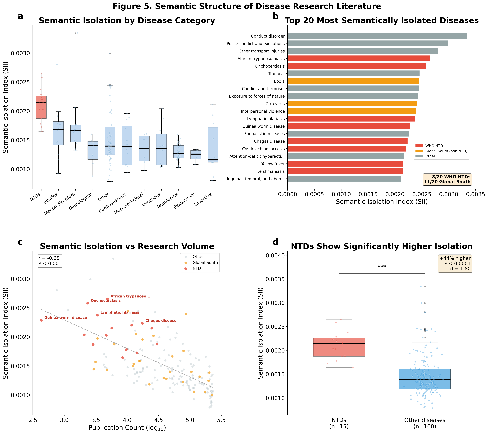

10 Tips for Becoming a
Top 1% AI User
Practical AI fluency for researchers who want to ship faster
Manuel Corpas
Senior Lecturer, University of Westminster · Turing Fellow
London Bioinformatics Meetup · 26 February 2026
Welcome everyone. I'm Manuel Corpas. Tonight I want to share 10 practical
techniques that separate casual AI users from the top 1% who are shipping
research faster than ever. This is about AI fluency: the habits, tools, and
workflows that compound your productivity. We'll start with quick wins you
can adopt tomorrow morning, and end with a live demo of an open-source
bioinformatics skill I built this week.
TIMING: 2 min
The 99% vs the 1%
Most researchers
- Use ChatGPT for one-off questions
- Copy-paste into web UIs
- Treat AI as a search engine
- No memory across sessions
Top 1%
- AI agents run overnight
- Persistent memory + RAG pipelines
- Automated research workflows
- Build tools, not just use them
Here's the gap. Most researchers interact with AI the same way they'd use
Google: ask a question, get an answer, move on. The top 1% have moved past
that. They have systems that remember, agents that work while they sleep,
and infrastructure that compounds.
TIMING: 3 min
Tip 1
Use AI Inside Your IDE, Not a Browser
- Claude Code in your terminal: reads your codebase, edits files, runs tests
- Cursor / Windsurf: AI-native editors with inline code generation
- GitHub Copilot: autocomplete on steroids
The browser is for chatting. The IDE is for building.
Tip 1 is the lowest-hanging fruit. Stop copy-pasting code between ChatGPT
and your editor. Use Claude Code in your terminal — it reads your entire
codebase, understands context, edits files directly, and runs your tests.
If you do one thing after tonight, install Claude Code.
TIMING: 2 min
Tip 2
Build a Prompt Library
# CLAUDE.md — the AI reads this at the start of every session
## Common Commands
- Run memory query: python query_corpas.py "genomic equity"
- Run RoboTerri: python 05-telegram_bot.py
- Run RoboIsaac: python 05-whatsapp_bot.py
## Current Focus
- RAG memory pipeline across notes, emails, publications
- Dual AI agent deployment: RoboTerri + RoboIsaac
- Daily research intelligence: arXiv ranking + podcasts
- Decision-support for research, career, and operations
## Architecture Rules (STRICT)
- All folder names: ALL CAPS with hyphens
- No hardcoded paths. Use pathlib.
- Every agent folder: PYTHON/, DATA/, LOGS/, OUTPUT/
One file. The AI reads it every session. It already knows your project, your tools, your rules.
But it's not static. I run /handoff at the end of every session — decisions, progress, and lessons feed back in. The system learns what I learn. Every day it gets sharper.
Tip 2: this is from my actual CLAUDE.md file. The AI reads it at the start
of every session. It knows my commands, my research focus, my architecture
rules. I never have to explain my project again.
But here's the key: it's not a static file. At the end of every session, I run
a skill called /handoff. It captures what I decided, what changed, what I learned.
That feeds back into the system. So tomorrow's AI session starts with everything
today's session discovered. It's a recurrent learning loop — the system gets
sharper every single day. That's the difference between a prompt and a living
knowledge base.
TIMING: 2.5 min
Tip 3
Give Your AI Long-Term Memory
- RAG pipeline: embed your notes, emails, papers, transcripts
- Vector database (ChromaDB): semantic search across everything
- Query: "What did I decide about X last month?"
$ python query_corpas.py "genomic equity metrics"
Found 7 results across notes, publications, sessions
Top match (0.89): "HEIM Index measures population
representation using heterozygosity and FST..."
Tip 3: memory. The biggest limitation of AI is that every conversation starts
from zero. Fix this with a RAG pipeline. I embed my research notes, emails,
publications, and meeting transcripts into ChromaDB. Now I can ask: "What did
I decide about the Wellcome proposal?" and get a real answer with source
citations. I built my own RAG system for this; it is the foundation everything
else builds on.
TIMING: 2 min
Tip 4
Use Voice, Not Just Text
- Whisper (local, Apple Silicon): transcribe meetings, lectures, ideas
- Voice memos → structured notes: talk for 5 min, get formatted output
- Dictation for prompts: faster than typing, more natural phrasing
Your brain outputs ideas faster as speech. Let AI handle the formatting.
Tip 4: voice. I run Whisper locally on Apple Silicon. I record a 5-minute
voice memo with my thoughts, transcribe it, and feed it to Claude for
structuring. This is how I draft papers, plan projects, and capture ideas
on walks. Your brain is faster at speaking than typing. Use that.
TIMING: 1.5 min
Tip 5
Automate Your Daily Intelligence
- arXiv radar: daily paper ranking by relevance to your research
- Podcast extraction: transcribe + summarise AI/science podcasts automatically
- Inbox triage: AI classifies emails by urgency and drafts replies
# Every morning at 06:30, my bot sends me this:
📰 Top 3 Papers Today:
1. "Ancestry-aware PRS improves prediction in..." (Score: 9.2)
2. "Foundation models for single-cell..." (Score: 8.7)
3. "Equitable genomic data sharing..." (Score: 8.4)
Tip 5: automate your information diet. I have scheduled jobs that run at
6:30am: arXiv ranking, podcast extraction, email triage. By the time I open
my laptop, my AI bot has already summarised the top papers, podcasts, and
flagged urgent emails. This saves me an hour every day.
TIMING: 2 min
Tip 6
Deploy Persistent AI Agents
- RoboTerri (Telegram): 15 commands, 13 tools, 8 scheduled job groups
- RoboIsaac (WhatsApp): analytical critique partner (Newton persona)
- Both share a memory bridge: same ChromaDB, same knowledge
These aren't chatbots. They're research assistants that run 24/7.
Tip 6: build persistent agents. I have two: RoboTerri on Telegram handles
daily operations — paper summaries, podcast publishing, email drafts, strategy
reviews. RoboIsaac on WhatsApp plays devil's advocate on my research plans.
They share the same memory bridge. They never forget a conversation.
TIMING: 2 min
Tip 7
Let AI Compound Your Outputs
- One research insight → 5 outputs: paper section, blog post, tweet thread, podcast episode, LinkedIn post
- Meeting transcript → action items + follow-up emails (automated)
- Literature review → gap analysis + research questions
The top 1% produce 5-10x more output. Not because they work harder, but because they repurpose with AI.
Tip 7: compound your outputs. Every insight I generate gets repurposed
automatically. A single finding becomes a paper paragraph, a Substack post,
a tweet thread, a podcast episode, and a LinkedIn article. The AI handles
the reformatting. I handle the thinking.
TIMING: 1.5 min. "Now we get to the real stuff."
Tips 1-7 are about using AI.
Tips 8-10 are about building with it.
This is where it gets interesting for bioinformaticians.
Transition slide. Pause here. "Everything so far is about using AI tools
that already exist. Now I want to talk about building. Because the
bioinformatics community has specific needs that general AI tools don't
address."
TIMING: 30 sec
Tip 8
Why Not Just Use ChatGPT?
Ask Claude to "profile my pharmacogenes from this 23andMe file."
It will try. It'll write plausible-looking Python. But:
- It hallucinates star allele calls and uses outdated CPIC guidelines
- It forgets CYP2D6 *4 is no-function (not reduced)
- You spend 45 minutes debugging its output
- No reproducibility bundle. No audit log. No checksums.
Announcing: 🦖 ClawBio

A domain expert's judgement, frozen into code that an AI agent executes correctly every time.
"Now, some of you are thinking: can't I just ask ChatGPT to do this?
You can try. Ask it to profile pharmacogenes from a 23andMe file. It'll
write plausible Python. But it'll hallucinate star allele calls. It'll
use outdated CPIC guidelines. It won't know that CYP2D6 *4 is no-function,
not just reduced. You'll spend 45 minutes debugging output that looks right
but isn't. ClawBio encodes the correct bioinformatics decisions so the agent
gets it right first time, every time. The skill is a domain expert's judgement,
frozen into code. Let me show you what that looks like."
TIMING: 3 min
🦖 What Is ClawBio?
- The first bioinformatics-native skill library for AI coding agents
- Built on OpenClaw — 180,000+ GitHub stars, the fastest-growing open-source AI project
- A skill = a domain expert's knowledge frozen into code that an agent executes correctly every time
- Local-first: your genomic data never leaves your laptop
- MIT licensed: open-source, free, community-driven
Think of it this way:
ChatGPT/Claude = a smart generalist who guesses at bioinformatics
🦖 ClawBio skill = a domain expert's proven pipeline that the AI executes
Not a web app. Not a SaaS. Expert skills that run on your machine.
"So what exactly is ClawBio? It's the first bioinformatics-native skill library
for AI coding agents. It's built on OpenClaw — which has over 180,000 stars on
GitHub and is the fastest-growing open-source AI project right now.
Here's the key concept: a skill is a domain expert's judgement, frozen into code.
When an AI agent needs to do pharmacogenomics or ancestry analysis, instead of
hallucinating an answer, it loads the ClawBio skill and executes it correctly
every time. The difference: ChatGPT guesses at bioinformatics. A ClawBio skill
is a proven pipeline that the AI executes. Everything runs locally — your genomic
data never leaves your laptop. MIT licensed, fully open-source."
TIMING: 2 min
🦖 ClawBio: Architecture
User: "Analyse the diversity in my VCF file"
│
┌──────▼──────┐
│ Bio │ ← routes by file type + keywords
│ Orchestrator│
└──────┬──────┘
│
┌──────▼──────────────────────────────┐
│ │
Equity PharmGx VCF Lit scRNA
Scorer Reporter Annotator Synthesizer Orchestrator
│ │
└──────┬──────────────────────────────┘
│
┌──────▼──────┐
│ Markdown │ ← report + figures + checksums
│ Report │ + reproducibility bundle
└─────────────┘
Here's how it works. The Bio Orchestrator takes your natural language
request, detects the file type, and routes to the right specialist skill.
Each skill wraps proven bioinformatics tools — Biopython, SAMtools, Scanpy,
AlphaFold. Every analysis produces a markdown report with figures, tables,
and a reproducibility bundle you can share.
TIMING: 2 min
🦖 Skills — 4 MVP, 7 Planned
- claw-pharmgx — 12 genes, 51 drugs, CPIC [MVP]
- claw-ancestry-pca — PCA vs SGDP (164 pops) [MVP]
- claw-semantic-sim — PubMedBERT disease isolation [MVP]
- claw-orchestrator — routing + reporting [MVP]
- claw-equity-scorer — HEIM diversity index
- claw-vcf-annotator — VEP + ClinVar + gnomAD
- claw-lit-synth — PubMed + LLM summaries
- claw-scrna — Scanpy automation
- claw-struct-predict — AlphaFold/Boltz local
- claw-repro — Conda/Nextflow export
Each skill = a SKILL.md + Python scripts. Composable. Local-first. Auditable.
Here's the current roadmap. Four skills are at MVP: PharmGx Reporter,
Ancestry PCA, Semantic Similarity, and the Bio Orchestrator. Seven more planned.
The PharmGx Reporter takes a 23andMe file, profiles 12 pharmacogenes, and
generates CPIC drug recommendations for 51 medications. Zero dependencies,
runs in under a second.
TIMING: 1.5 min
Tip 9
Build Modular Skills
Live Demo: "I just got my 23andMe results."
Question: "What drugs should I worry about?"
One command. Under 1 second. Entirely on your laptop.
$ python pharmgx_reporter.py --input demo_patient.txt --output report
Let's run it.
"Let me show you what a ClawBio skill looks like. Here's the scenario:
I just got my 23andMe results back. I want to know which drugs might not
work for me. With ChatGPT, I'd spend 45 minutes debugging hallucinated
star alleles. With ClawBio, I type one command."
TIMING: Switch to terminal. Run PharmGx. ~1 sec to execute.
Demo: PharmGx Reporter
$ python pharmgx_reporter.py --input demo_patient.txt --output report
Parsing: demo_patient.txt (23andme format)
PGx SNPs found: 30/30
Gene Profiles:
CYP2C19 *1/*2 Intermediate Metabolizer
CYP2D6 *4/*4 Poor Metabolizer
CYP2C9 *1/*3 Intermediate Metabolizer
VKORC1 GA Intermediate Warfarin Sensitivity
SLCO1B1 TC Intermediate Function
DPYD Normal/Normal Normal Metabolizer
Drug Recommendations (51 drugs):
Standard: 21 Caution: 20 Avoid: 10
ALERT — Drugs to AVOID:
* Codeine: Avoid. Select alternative analgesic.
* Tramadol: Avoid. Select alternative analgesic.
* Tamoxifen: Consider aromatase inhibitor or TDM.
* Amitriptyline, Nortriptyline, Desipramine... (7 TCAs)
"That took less than one second. This patient is CYP2D6 *4/*4 — a Poor
Metabolizer. Codeine literally cannot work for them. Their body can't
convert it to morphine. Tramadol same thing. And seven tricyclic
antidepressants should be avoided. 10 drugs flagged AVOID. 20 flagged
CAUTION. I didn't tell the tool which genes to check. I didn't specify
which guidelines to follow. That domain knowledge is baked into the skill."
TIMING: 2 min. If live demo failed, show this slide as fallback.
PharmGx Report: Gene Profiles
| Gene |
Diplotype |
Phenotype |
Drugs Affected |
| CYP2D6 |
*4/*4 |
Poor Metabolizer |
22 drugs |
| CYP2C19 |
*1/*2 |
Intermediate Metabolizer |
10 drugs |
| CYP2C9 |
*1/*3 |
Intermediate Metabolizer |
6 drugs |
| VKORC1 |
GA |
Intermediate Sensitivity |
Warfarin |
| CYP3A5 |
*3/*3 |
Non-expressor |
Tacrolimus |
| DPYD |
Normal/Normal |
Normal |
Safe for 5-FU |
12 genes profiled. 51 drugs assessed. Zero dependencies. Under 1 second.
"CYP2D6 *4/*4 is the headline — this single gene affects 22 drugs.
Codeine literally cannot work because CYP2D6 converts codeine to morphine,
and *4/*4 means zero enzyme activity. DPYD is normal — safe for 5-FU chemo.
This is the same logic that clinical pharmacogenomics labs use. Running on
your laptop. No data sent anywhere. Under one second."
TIMING: 2 min
Why Pharmacogenomics Matters
- ~7% of people are CYP2D6 Poor Metabolizers — codeine gives them zero pain relief
- ~2% are CYP2C19 Poor Metabolizers — clopidogrel won't prevent their next heart attack
- 0.5% carry DPYD variants — standard 5-FU dose can be lethal
That was one skill. One command. Now let me zoom out to the systemic problem.
Based on CPIC guidelines (cpicpgx.org). For research use; not a diagnostic device.
"7% of people in this room might be CYP2D6 poor metabolizers. If you
take codeine after surgery, you get zero pain relief. 2% are CYP2C19
poor metabolizers — clopidogrel won't protect them after a stent. And
0.5% carry DPYD variants where a standard 5-FU chemo dose can kill you.
That was the personal level. Now let me show you the systemic level."
TIMING: 1.5 min
Demo 2: Ancestry Decomposition PCA
Question: "Where does my cohort sit in global genetic space?"
736 Peruvian samples · 28 indigenous populations · vs. SGDP (345 samples, 164 global populations)
$ python ancestry_pca.py --demo --output ancestry_report
Ancestry Decomposition PCA
Cohort: 736 samples, 28 populations
Reference: SGDP (345 samples, 164 populations)
Common variants: 42,831 biallelic SNPs
Variance: PC1=51.4% PC2=21.7% PC3=6.7%
Generating 4-panel figure...
Done. Saved to ancestry_report/
"Second skill. Same principle — one command, works out of the box.
The reference panel is the Simons Genome Diversity Project: 345 samples
from 164 populations spanning every inhabited continent. The skill finds
common variants, runs PCA on the merged set, and generates a 4-panel
figure. I didn't tell it which reference to use, how to normalise contigs,
or how to handle IBD. That's baked in."
TIMING: 1.5 min
Ancestry PCA: Peru vs 164 Global Populations

"Four panels. Top-left: PC1 vs PC2 showing the internal structure of
28 Peruvian populations. Top-right: regional groupings — Highland in red,
Amazonian in green, Coastal in blue. Bottom-left: linguistic groupings —
Quechua and Aymara. And bottom-right — the money shot: Peru against the
Simons Genome Diversity Project. Circles are Peru, triangles are SGDP.
You can see exactly where indigenous Peruvian populations sit relative
to 164 global populations."
TIMING: 2 min. Let the figure breathe. Point to Panel D.
What This Tells Us
- Amazonian groups (Matzes, Awajun, Candoshi) are genetically distinct from all SGDP populations
- Highland Quechua and Aymara speakers form separate clusters in PC3
- Coastal populations show European admixture visible in the PCA
- These populations are absent from most GWAS
That figure is from a paper we're writing on the Peruvian Genome Project.
But there's a deeper problem. Even when diseases are studied, their research doesn't connect.
"Panel D is the key. Amazonian indigenous groups like the Matzes sit in
genetic space that no SGDP population occupies. They are genuinely
underrepresented — not just in GWAS, but in the reference panels we use
to study diversity. And yet a drug like codeine works differently in
these populations because of pharmacogenomic variants we haven't studied.
That's the connection between the two demos: personal pharmacogenomics
and population-level representation are the same equity problem.
But here's the bigger idea. That figure is from a paper we're writing.
When we publish, anyone can reproduce it with one command. Not 'code
available on GitHub' — where you spend two days fixing broken
dependencies and hardcoded paths. One command. Identical figure.
Checksums to prove it. That's what reproducibility should look like."
TIMING: 2.5 min
Demo 3: Semantic Similarity Index
Question: "Which diseases are trapped in knowledge silos?"
175 GBD diseases · 13.1M PubMed abstracts · PubMedBERT embeddings (768-dim)
$ python semantic_sim.py --demo --output sem_report
Semantic Similarity Index
Diseases analysed: 175
Abstracts embedded: 13,100,000
Model: PubMedBERT (768-dim, Apple MPS)
SII range: 0.041 - 0.189
NTDs show +38% higher semantic isolation
P < 0.0001, Cohen's d = 0.84
14/25 most isolated = Global South priority
Done. Saved to sem_report/
"Third skill. Same principle — one command. But now the question is systemic:
which diseases are trapped in knowledge silos? We embedded 13.1 million PubMed
abstracts with PubMedBERT and computed a Semantic Isolation Index for every
GBD disease. The result: neglected tropical diseases are 38% more isolated
than other conditions. They exist in knowledge silos with almost no
cross-disciplinary research bridges."
TIMING: 1.5 min
Semantic Structure of Disease Research

"Four panels again. Top-left: semantic isolation by disease category —
notice Injuries and Infectious diseases at the top. Top-right: the 20
most isolated diseases — 14 of the top 25 are Global South priority
conditions, shown in red and orange. Bottom-left: the inverse correlation
between research volume and isolation — the less you study a disease,
the more isolated its research becomes. A vicious cycle. Bottom-right:
NTDs versus everything else — statistically significant, large effect size.
This is structural neglect made visible through language models."
TIMING: 2 min. Let the figure breathe. Point to Panel D.
Knowledge Silos Kill Innovation
- A breakthrough in malaria immunology could help leishmaniasis — but the literatures don't talk to each other
- Drug repurposing depends on cross-disease bridges that don't exist for NTDs
- The less a disease is studied, the more isolated it becomes — a vicious cycle
- This metric didn't exist before. Now it takes one command.
Three skills. Three scales: personal (drugs), population (ancestry), systemic (knowledge).
Corpas et al. (2026). HEIM: Health Equity Index for Measuring structural bias in biomedical research. Under review.
"This is why it matters. A malaria immunology breakthrough could help
leishmaniasis, but those two literatures barely overlap. Drug repurposing
depends on cross-disease bridges, and NTDs have almost none.
Three demos tonight, three scales: personal pharmacogenomics, population
ancestry, and systemic knowledge silos. Each one took days, not months.
Each one runs with one command. That's what ClawBio makes possible."
TIMING: 1.5 min
The Reproducibility Crisis, In Practice
Today: Checking a Paper's Code
- Read paper. Want to verify Figure 3.
- Go to GitHub. Clone the repo.
- Wrong Python version. Fix dependencies.
- Need the reference data. Where is it?
- Download 2GB from Zenodo. Link is dead.
- Email first author. Wait 3 weeks.
- Paths:
/home/jsmith/data/
- 2 days later: still broken.
With Skills: Same Paper
- Read paper. Want to verify Figure 3.
- Install the paper's published skill.
python ancestry_pca.py --demo- Figure 3 appears. Identical.
- SHA-256 checksum: verified.
- Dependencies: resolved automatically.
- Reference data: bundled.
- 30 seconds. Done.
Every figure in your paper should be one command away from reproduction.
"How many of you have tried to reproduce a figure from a paper using the
authors' GitHub code? [Pause for reactions.] Let me walk you through what
actually happens.
You read a paper. Interesting result. You want to check the code. So you
go to GitHub, clone the repo. Wrong Python version. Dependencies are broken.
You need the reference data — where is it? There's a Zenodo link. It's dead.
You email the first author. Three weeks later they reply with a Dropbox link.
The paths are hardcoded to /home/jsmith/data/. Two days in, you still can't
reproduce one figure. Most people give up.
Now imagine the same paper published a skill. You install it. You run one
command. Figure 3 appears. Identical. SHA-256 checksum verified. 30 seconds.
That's the shift. Not 'code available on request' — code that actually works,
out of the box, on anyone's machine. The ancestry PCA figure I just showed you?
That's from a paper we're writing. When we publish, anyone will reproduce it
with one command. That's what reproducibility should look like."
TIMING: 3 min
Tip 10
Publish Skills, Not Just Papers
- claw-pharmgx took 2 days to build. 12 genes, 51 drugs, CPIC guidelines.
- claw-ancestry-pca wraps a real publication pipeline. One command reproduces Figure 3.
- claw-semantic-sim embeds 13.1M abstracts and reveals which diseases are trapped in knowledge silos.
- Every skill ships with checksums, audit logs, and a reproducibility bundle.
Skills we need from you:
- claw-gwas — PLINK/REGENIE automation
- claw-metagenomics — Kraken2/MetaPhlAn wrapper
- claw-acmg — Clinical variant classification
- claw-pathway — GO/KEGG enrichment
"Tip 10: publish skills, not just papers. claw-pharmgx took 2 days to
build. claw-ancestry-pca wraps a real publication pipeline — the figure
you just saw is from a paper in preparation, and anyone will be able to
reproduce it with one command.
Think about your own work. That GWAS pipeline you run every time? Make
it a skill. That metagenomics classifier? Make it a skill. That clinical
variant interpretation workflow? Wrap it. The template is there. The
orchestrator routes to your skill automatically.
Imagine a world where every bioinformatics paper ships with a ClawBio
skill. You read the paper, you run the skill, you get the exact figures.
That's the world we're building."
TIMING: 2.5 min
Get Started
github.com/manuelcorpas/ClawBio
Run Tonight
- claw-pharmgx: your 23andMe drug report
- claw-ancestry-pca: your cohort vs SGDP
- claw-semantic-sim: disease knowledge silos
- All work out of the box with demo data
Build Next
- Copy SKILL-TEMPLATE.md
- Wrap your publication pipeline
- Submit a PR — I'll review it personally
🦖 MIT licensed. Every paper deserves a reproducible skill.
"The repo is live now. Tonight you can run both demos on your own data.
claw-pharmgx works with any 23andMe or AncestryDNA file. claw-ancestry-pca
works with any VCF and population map. Both include demo data so you can
try them immediately.
If you want to build the next skill, the template is there. Think about
the analysis you run most often. The one where you copy-paste the same
pipeline every time. Wrap it as a skill. Submit a PR. I'll review it
personally."
TIMING: 1.5 min
10 Tips Recap
- 1. AI in your IDE, not browser
- 2. Build a prompt library (CLAUDE.md)
- 3. Give AI long-term memory (RAG)
- 4. Use voice, not just text
- 5. Automate daily intelligence
- 6. Deploy persistent AI agents
- 7. Let AI compound your outputs
- 8. Contribute to open-source AI
- 9. Build modular skills
- 10. Create shipping infrastructure
The top 1% build systems. Everyone else uses tools.
Quick recap. Tips 1-7: use AI effectively — IDE, prompts, memory, voice,
automation, agents, compounding. Tips 8-10: build with AI — open-source,
modular skills, shipping infrastructure. The throughline: the top 1% build
systems that compound. Everyone else uses tools one at a time.
TIMING: 1 min
Thank You
Questions welcome — and at the pub after
GitHub: github.com/manuelcorpas/ClawBio
LinkedIn: linkedin.com/in/manuelcorpas
X: @manuelcorpas
🦖 Slides: github.com/manuelcorpas/ClawBio/slides
Thank you. I'll be at the pub after — come talk to me if you want to
build a skill, have ideas for the library, or just want to chat about
AI agents in research. Questions?
TIMING: remainder